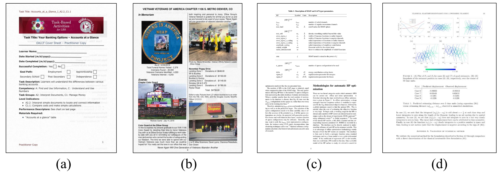

Document Image Machine Translation (DIMT) task aims to translate text embedded in document images from one language to another. It’s a multi-modal task that requires the integration of both textual content and document layout, bridging the gap between optical character recognition (OCR) and natural language processing (NLP). The proposed DIMT 2025 Challenge aims to advance research in end-to-end document image machine translation, a rapidly evolving area in multi-modal document understanding. The competition consists of two tracks: OCR-free and OCR-based, each offering two subtasks—small models and large models. Participants can choose whether or not to utilize OCR results but must implement a single, end-to-end DIMT model. By promoting innovative end-to-end document translation techniques, this challenge seeks to push the boundaries of document intelligence and multilingual translation. It also aims to explore the performance differences between large language models (LLMs) and smaller models on complex layout document images, advancing both the field of document processing and multilingual capabilities.

Document images such as scans and PDF renderings are important
carriers of human knowledge. With the advancement of digitalization, techniques for automatically recognizin, understanding
, and translating document images have become a crucial part of digital transformation. Among them, Document Image
Machine Translation (DIMT) is not only necessary for real-world
communication but also essential for many downstream tasks, such
as cross-lingual document retrieval, summarization, and
information extraction. Over the past few years, DIMT technology has achieved remarkable progress with the development of
deep learning. However, existing technologies are difficult
to meet the demand for practical applications. The main reasons
lie in the following aspects:
(1) Multi-modality and cross-linguality: Due to the inherent
multi-modality nature, real-world document images often
involve a intricate combination of complex layout, dense
text, and visually-rich elements, resulting in difficulties in
their comprehensive understanding and the cross-lingual
translation.
(2) Image and text noise: Many factors such as image defect or
OCR error may cause noise to the image or text as model
input, leading to additional challenges to a DITM system.
(3) Lack of samples and a unified benchmark: Due to the high
annotation cost and different annotation protocals, existing
datasets often suffer insufficient samples, inconsistent labels
and evaluation metrics, resulting in model performance that
are not directly comparable.
To advance the research field of DIMT, we plan to launch a
Document Image Machine Translation challenge (DIMT 2025).
This challenge aims to provide adequate samples with standarlized annotations and metric to establish benchmark results with
clear, replicable settings. The DIMT 2025 challenge focus on the
translation of real-world complex-layout document images, taking
into account two document domains including web documents and
academic articles(see Figure 1).
Based on the input type, we release two tracks:
1) OCR-based DIMT,
where model inputs include the image and its OCR results (word
and word bounding box).
2) OCR-free DIMT, where model input is
the image. Both tracks are given English document images and are
required to translate them to Chinese.
Track 1. OCR-based DIMT
This track focuses on translating text from document images where
OCR results (containing words and word bounding boxes) are provided. The task aims to generate an intact, ordered target translation
from the raw, often chaotic OCR-extracted words in an end-to-end
manner. Participants are required to handle misordered, fragmented,
or disjointed OCR outputs and accurately reorder them while translating the text into the target language. The goal is to produce
a coherent and structured target-language text that reflects the
original document’s content and layout, ensuring the translation
maintains both meaning and order.
Track 1.1 OCR-based DIMT-LLM: aims to evaluate the performance of LLM-based methods on the DIMT task. In this sub-track,
participants must use large language models (LLMs) with over 1 billion parameters to achieve the OCR-based DIMT task. Open-source
LLMs can be utilized, and participants are allowed to fine-tune
these models to improve performance. The number of parameters
in the model must be specified in the submitted reports used during
inference.
Track 1.2 OCR-based DIMT-Small: aims to evaluate the performance of small model-based methods on the DIMT task. In this
sub-track, participants are only allowed to use small models, where
the number of parameters is fewer than 1 billion, to achieve the
OCR-based DIMT task. Participants must focus on optimizing these
smaller models for accurate translation and reordering. The number of parameters in the model must be specified in the submitted
reports used during inference.
Track 2. OCR-free DIMT
This track focuses on an OCR-free approach to Document Image
Machine Translation, where participants are tasked with translating a source document image directly into a markdown-formatted
target translation without any OCR assistance in an end-to-end
way. In the OCR-free scene, participants must handle the complex
layout and contextual information directly from the image, delivering a coherent and accurate translation in the target language.
The final submission must follow markdown format reflecting the
content and layout of the original document.
Track 2.1 OCR-free DIMT-LLM: aims to evaluate the performance of LLM-based methods on the OCR-free DIMT task. In
this sub-track, participants must use large language models (LLMs)
with over 1 billion parameters to achieve the OCR-free DIMT task.
Open-source LLMs can be utilized and fine-tuned to handle complex layouts and long context translation. Participants must specify
the number of parameters in the model used during inference in
their submitted reports.
Track 2.2 OCR-free DIMT-Small: aims to evaluate the performance of small model-based methods on the OCR-free DIMT
task. In this sub-track, participants are only permitted to use small
models with fewer than 1 billion parameters to achieve the OCRfree DIMT task. Participants must work within these constraints,
focusing on optimizing smaller models to handle complex layouts
and long context. The number of parameters in the model must be
specified in the submitted reports used during inference.
The competitition dataset statistics are summarized in Table 1: For Track 1, we provide a train set containing 300K images and a valid set of 1K images. All images are converted from open-source web documents available on the internet. Each image is accompanied by corresponding OCR results (word and word bounding box), word-level reading order index, sentence-level and document-level translation. For Track 2, we provide a train set containing 124K images and a valid set of 1K images. All images are converted from PDF and latex files crawled from Arixv. Each image is accompanied by corresponding source language text and target language text inmarkdown format. For details of the dataset, please refer to our work.
| Track | Dataset | # of Examples | |||||||||||||||||||||||||||||
|---|---|---|---|---|---|---|---|---|---|---|---|---|---|---|---|---|---|---|---|---|---|---|---|---|---|---|---|---|---|---|---|
| Train | Valid | Test | |||||||||||||||||||||||||||||
| Track 1 | DIMT-WebDoc-300K | 300K | 1K | 1K | |||||||||||||||||||||||||||
| Track 2 | DIMT-arXiv-124K | 124K | 1K | 1K | |||||||||||||||||||||||||||
We will provide evaluation scripts for both tracks: For Track 1, the metric is document-level BLEU and chrF++ for both translated target language text and reordered source language text. For Track 2, the metric is document-level BLEU, chrF++ and BLEU-PT for translated target language text in markdown format. As the translated texts contain formulas and tables in markdown format that influence the BLEU computing, we remove them from both reference texts and predictions, keep the plain texts, and calculate BLEU noted as BLEU-PT.
| Event | Date |
|---|---|
| Competition website available | December 10, 2024 |
| Training data and baseline code available | January 10, 2025 |
| Test data release | February 20, 2025 |
| Submission site opens | March 20, 2025 |
| Deadline for competition submissions | April 10, 2025 |
| Deadline for competition reports | April 20, 2025 |
Institute of Automation, Chinese Academy of Sciences (CASIA)
Institute of Automation, Chinese Academy of Sciences (CASIA)
Institute of Automation, Chinese Academy of Sciences (CASIA)
University of Chinese Academy of Sciences
University of Chinese Academy of Sciences
University of Chinese Academy of Sciences
University of Chinese Academy of Sciences
Institute of Automation, Chinese Academy of Sciences (CASIA)
Institute of Automation, Chinese Academy of Sciences (CASIA)
@inproceedings{zhang-etal-2023-layoutdit,
title = "{L}ayout{DIT}: Layout-Aware End-to-End Document Image Translation with Multi-Step Conductive Decoder",
author = "Zhang, Zhiyang and
Zhang, Yaping and
Liang, Yupu and
Xiang, Lu and
Zhao, Yang and
Zhou, Yu and
Zong, Chengqing",
editor = "Bouamor, Houda and
Pino, Juan and
Bali, Kalika",
booktitle = "Findings of the Association for Computational Linguistics: EMNLP 2023",
month = dec,
year = "2023",
address = "Singapore",
publisher = "Association for Computational Linguistics",
url = "https://aclanthology.org/2023.findings-emnlp.673",
doi = "10.18653/v1/2023.findings-emnlp.673",
pages = "10043--10053",
}
@inproceedings{liang-etal-2024-document,
title = "Document Image Machine Translation with Dynamic Multi-pre-trained Models Assembling",
author = "Liang, Yupu and
Zhang, Yaping and
Ma, Cong and
Zhang, Zhiyang and
Zhao, Yang and
Xiang, Lu and
Zong, Chengqing and
Zhou, Yu",
editor = "Duh, Kevin and
Gomez, Helena and
Bethard, Steven",
booktitle = "Proceedings of the 2024 Conference of the North American Chapter of the Association for Computational Linguistics: Human Language Technologies (Volume 1: Long Papers)",
month = jun,
year = "2024",
address = "Mexico City, Mexico",
publisher = "Association for Computational Linguistics",
url = "https://aclanthology.org/2024.naacl-long.392",
doi = "10.18653/v1/2024.naacl-long.392",
pages = "7084--7095",
}